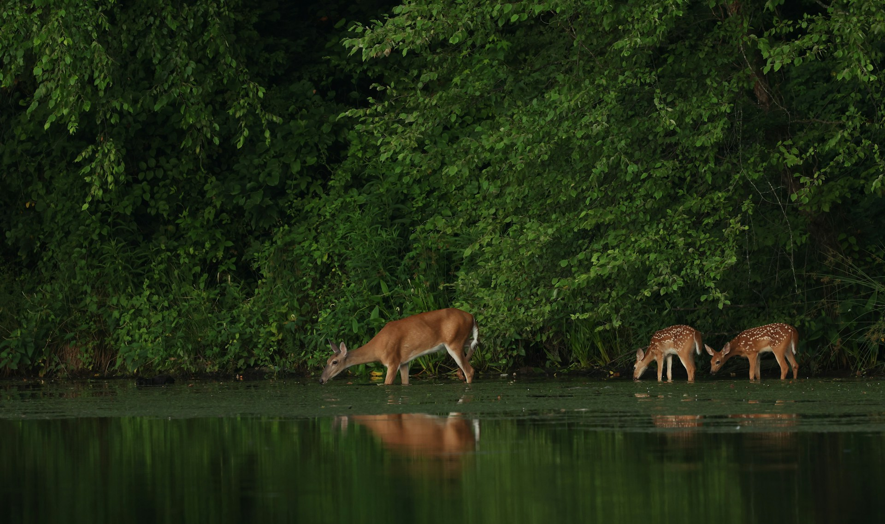

Energy and Matter in Ecosystems
Discover how energy flows and matter cycles through ecosystems.
Explore Topics
Energy flows through an ecosystem. Matter keeps recycling. Why?
This website is a resource for learning how energy flows through ecosystems. and how matter is recycled through nutrient cycles. We will explore how food chains and food webs show the movement of energy between organisms, why less energy is available as you move up a trophic level, and the roles of scavengers, detritivores, and decomposers. We will also learn how important nutrients, including carbon, nitrogen, and phosphorus, move between living organisms and the environment. This website is organized in short sections with visuals and examples to make the concepts easy to follow and understand.
Food Chains and Food Webs
Trophic Levels
Scavengers, Detritivores, and Decomposers
Nutrient Cycles
Energy flows. Matter cycles.